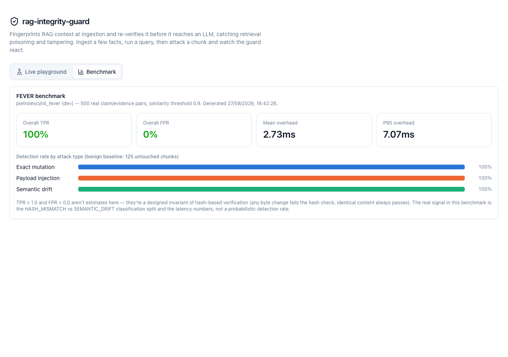
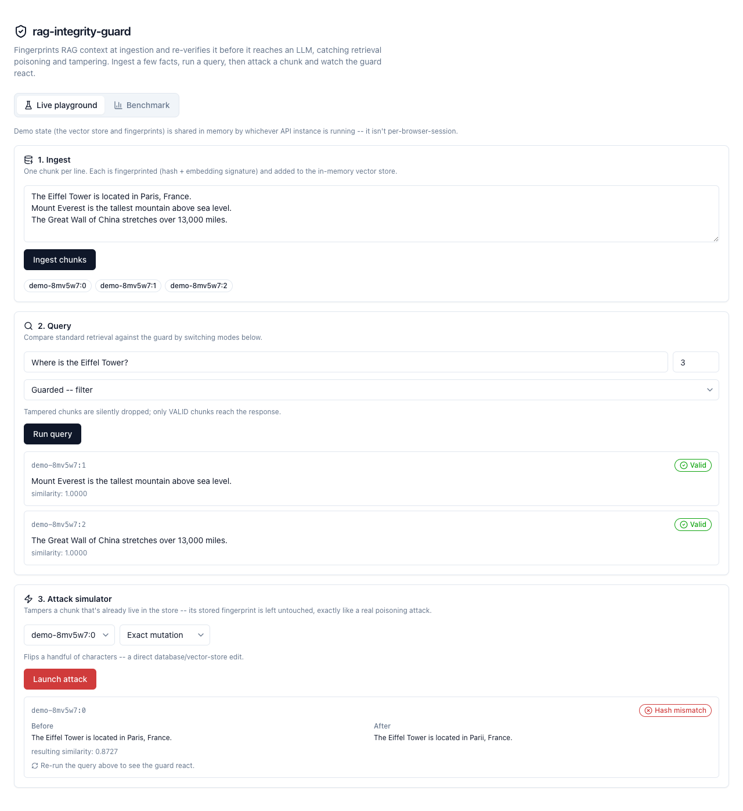

rag-integrity-guard
Eine von Grund auf gebaute Integritätsschicht für RAG-Systeme. Jeder Chunk bekommt beim Ingest einen Fingerprint und wird zur Abfragezeit erneut geprüft, sodass ein kompromittierter Vektorspeicher, ein vergiftetes Dokument oder eine direkte Datenbankänderung erkannt wird, bevor sie das LLM erreicht, statt ihr blind zu vertrauen.
100 % Richtig-Positive · 0 % Falsch-Positive über drei Angriffsarten in einem öffentlichen Benchmark mit 500 Paaren

Das Problem
Standard-RAG vertraut ohne Rückfrage allem, was der Vektorspeicher zur Abfragezeit zurückgibt. Wird dieser Speicher manipuliert, über eine kompromittierte Ingest-Pipeline, ein vergiftetes Dokument oder eine direkte Datenbankänderung, hat das LLM keine Möglichkeit, echten Kontext von der Fälschung eines Angreifers zu unterscheiden. Es antwortet einfach selbstbewusst mit dem, was es bekommen hat.
So funktioniert es
- Jeder Chunk erhält beim Ingest eine doppelte Signatur: einen kryptografischen Hash (BLAKE3/SHA-256) des normalisierten Textes zur exakten Manipulationserkennung sowie ein L2-normalisiertes semantisches Embedding für den Ähnlichkeitsvergleich.
IntegrityGuardRetrieverlegt sich ohne Anpassung um jeden LangChain-BaseRetrieverund prüft jeden Chunk erneut, den dieser zurückgibt. Stimmt der Hash, ist das Ergebnis VALID, Punkt. Weicht der Hash ab, während das Embedding noch sehr ähnlich ist, wird SEMANTIC_DRIFT markiert: Der Inhalt wurde gerade so weit verändert, dass er plausibel bleibt, und genau so sieht ein getarnter Poisoning-Versuch aus. Weicht zusätzlich das Embedding ab, ist es der deutlichere HASH_MISMATCH. NurVALID-Chunks gelten je als vertrauenswürdig.- Ein konfigurierbarer
StrictnessModeentscheidet, was als Nächstes passiert.STRICTblockiert die gesamte Anfrage,FILTERverwirft den betroffenen Chunk stillschweigend, undLOG_ONLYgibt alles annotiert zur Prüfung zurück. - Standardmäßig ist ein
HashingEmbedderohne jede Abhängigkeit enthalten: deterministisch gehashte n-Gramme, kein API-Schlüssel, keine heruntergeladenen Gewichte, läuft überall und kostet nichts. Ein echterOpenAIEmbeddertritt an seine Stelle, wenn ein wirklich semantischer Vergleich den Aufwand wert ist.
Gemessen, nicht behauptet
Ich habe es gegen 500 echte Paare aus Aussage und Belegtext aus dem FEVER-Datensatz laufen lassen, aufgeteilt in eine unauffällige Baseline und drei Angriffsarten: exakte Mutation, Einschleusen von Prompt-Injection-Payloads und vollständiger Austausch durch semantische Drift.

Insgesamt: 100 % Richtig-Positiv-Rate, 0 % Falsch-Positiv-Rate, bei einem durchschnittlichen Prüf-Overhead von 2,73 ms (7,07 ms p95) mit dem kostenlosen Standard-Embedder. Das ist schnell genug, um standardmäßig im Retrieval-Pfad zu liegen, und nicht als Schalter, den man beim ersten Lastanstieg abschaltet.
Eine Einschränkung, die man klar sagen sollte: Die Werte 100/0 sind kein Wahrscheinlichkeitsmaß, sondern eine Eigenschaft der Hash-
Prüfung. Jede Änderung auf Byte-Ebene lässt den Hash konstruktionsbedingt scheitern, dieser Teil stand also nie wirklich infrage. Die
interessante Zahl ist die Aufteilung zwischen HASH_MISMATCH und SEMANTIC_DRIFT. Ein Durchlauf über verschiedene
Schwellenwerte zeigt, dass der kostenlose HashingEmbedder ausgerechnet beim hinterhältigsten Angriff Mühe hat, dem
vollständigen Themenwechsel, weil er lexikalische n-Gramm-Überschneidung liest statt Bedeutung. Ein echter semantischer Embedder
würde diese Zahl wahrscheinlich erst verschlechtern, bevor sie besser wird, und genau darauf kommt es bei einer
Abwehr gegen Poisoning wirklich an.
So sieht es aus
Zur Bibliothek gehört ein Live-Dashboard. Beispielfakten einlesen, eine Abfrage starten, dann einen Angriff auf einen eingelesenen Chunk auslösen und zusehen, wie der Guard ihn in Echtzeit einordnet.

Engineering, nicht nur ein Notebook
Es ist ein richtiges Monorepo: das Python-Kernpaket (Hasher, ein Embedder-Protokoll passend zu LangChains eigener
Embeddings-Schnittstelle, der Fingerprint-Speicher, der LangChain-Retriever-Wrapper), ein FastAPI-Backend, ausgeliefert
als Python-Serverless-Function auf Vercel, und ein Next.js-Dashboard. Die letzten beiden laufen bewusst als zwei unabhängige Vercel-Projekte,
nachdem die Variante mit einem Projekt die Next.js-Framework-Erkennung still verloren hatte. 89 Tests, über 96 % Abdeckung, ruff und
mypy im Strict-Modus, in CI bei jedem Push erzwungen, über Python 3.11 und 3.12.